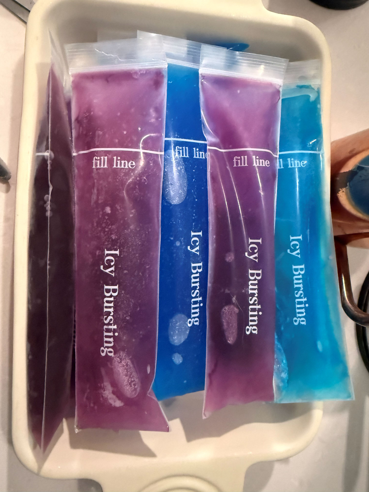
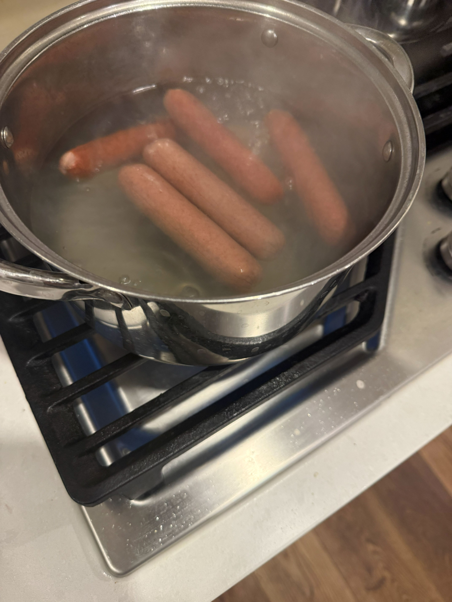
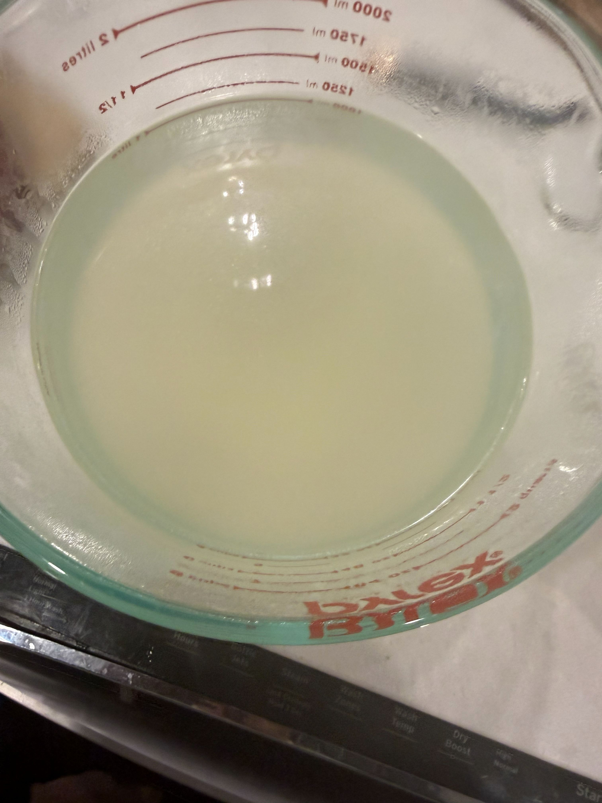
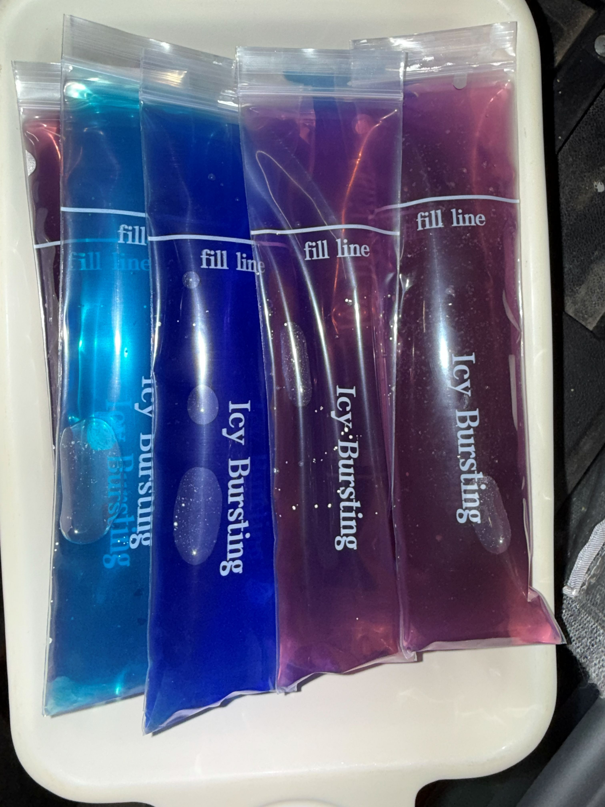

Welcome to My Recpie!
To start off, this Recpie is to make Hot Dog Water ice pops end result:

As you can see, they look like normal ice pops
Ingredientes:
1 pack of hot dogs
6 cups of water
food dye of your choice
Directions:
Pour water in a sufficient sauce pan. Get the water to a boil then drop in the pack of hot dogs. boil the hot dogs until the last one is floating then take them out and strain the water into a bowl. you should have around 5 cups of hot dog water
cool the water then add to your ice pop bags/containers, to cool faster you could put your bowl of hot dog water into a bowl with colder water.
This will make approximately ten 4 ounce hot dog water ice pops
Have fun and ENJOY!
Pictures of each stage below


